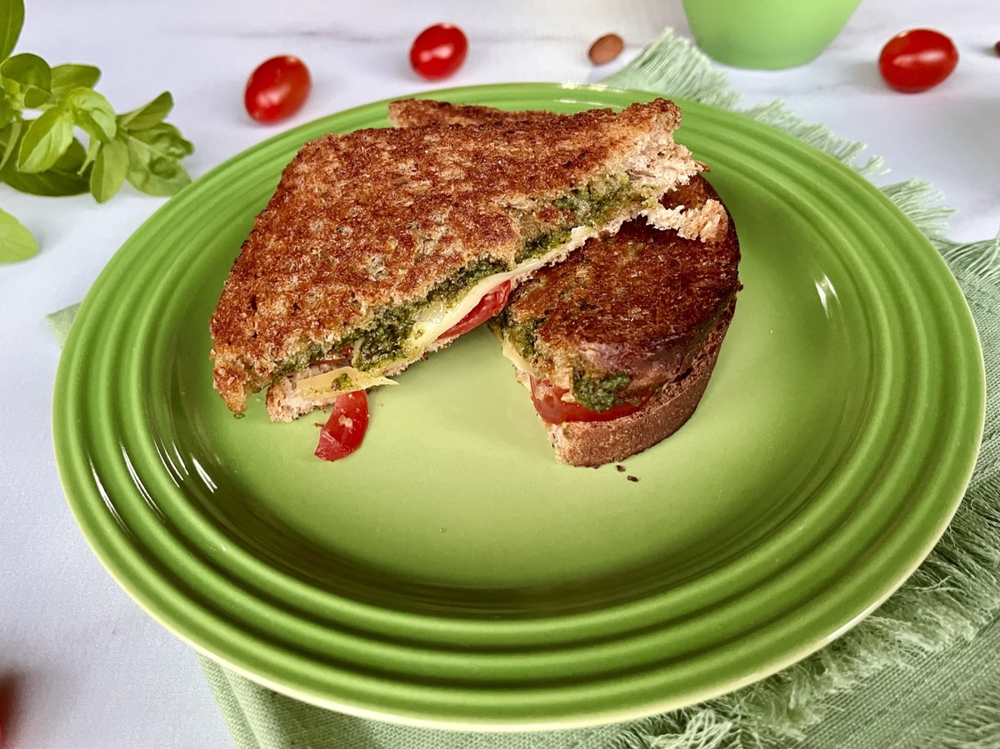

Sanduíche de frigideira com molho pesto e parmesão

Ingredientes
2 fatias de pão de sua escolha
2 colheres de sopa de molho pesto (comprado pronto ou feito em casa)
1/2 xícara de queijo parmesão ralado
2 fatias de queijo de sua preferência (por exemplo, muçarela,
provolone, ou queijo suíço)
1 colher de sopa de manteiga
Tomate em rodelas (opcional)
Folhas de manjericão fresco (opcional)
Modo de Preparo
1 Espalhe uma colher de sopa de
molho pesto em uma das fatias de pão.
2 Polvilhe metade do queijo
parmesão ralado sobre o molho pesto.
3 Coloque as fatias de queijo sobre
o parmesão, adicionando também o tomate em rodelas e folhas de
manjericão, se estiver usando.
4 Coloque a segunda fatia de pão
por cima, formando um sanduíche.
5 Derreta a manteiga em uma
frigideira em fogo médio.
6 Coloque o sanduíche na frigideira
e cozinhe até que ambos os lados fiquem dourados e o queijo derreta.
Isso geralmente leva de 2 a 3 minutos de cada lado.
7 Se desejar, adicione mais queijo
parmesão ralado por cima do sanduíche enquanto estiver na
frigideira, para formar uma crosta crocante.
8 Retire o sanduíche da frigideira
e coloque-o em um prato. Corte ao meio se desejar e sirva
imediatamente.